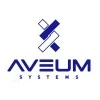

Projects: High Impact
Aveum Systems - DNA Based ID and Tracking System
Date: Spring 2024
Supported Aveum Systems, Inc. in formulating their technological road map for developing massively scalable DNA information systems and related technologies which will enable the construction of identity systems that are hyper-secure, cryptographically rigorous, AI/ML backed and are at the same time AI resistant.
Aveum Systems, Inc. is a Delaware Corporation operating in the US and Europe targeting pilot programs in Africa and the Kingdom of Saudi Arabia.
AlaTrac - Monetize & Market Ready
Date: June 2021
AlaTrac is a field service scheduling, asset tracking and assessment tool that has been leveraged by internal Alamon field service teams to assign, inspect and capture key attributes of industrial and utility assets including telephone poles, energy storage units, cellular towers and related infrastructures. While the solution is being leveraged by Alamon’s traditional lines of business, the objective is to productize the solution to third parties and create a new source of revenue for the company.
AlaTrac is an open standards based, hybrid application that is currently running in the AWS cloud. While the solution is intended to be as easy to use as an excel spreadsheet, the platform’s capabilities extend beyond data input. AlaTrac’s core features include the ability to geolocate an asset, assign an asset for inspection, establish roles and set field based rules and intelligent routing for the intake of data by inspectors, including images, telemetry data from bluetooth sensors/device. These attributes are then captured via an Android based mobile application (Field Collector). Once captured, the mobile application monitors for connectivity and once connected (either via cellular or wifi network) intelligently publishes inputs and data back to the core platform (AlaTrac) based on data type and available bandwidth.
While the AlaTrac has been leveraged internally on a wide range of projects, the solution is currently beyond a Minimal Viable Product, is in beta and continues to be prepped and hardened for third party access based upon the efficiency value and revenue facilitation it has already delivered for internal use cases.
Transform Application Architecture
Date: July 2019
Initiate, move, transform and refactor critical legacy applications from monolithic to microservices, distributed systems leveraging Jakarta EE, MicroProfile, PostgreSQL, MongoDb, Lucene (Elastic Search), GeoTools (Java GIS libs), Hadoop and the Hadoop ecosystem of add ons (Hive, Spark, etc.) Leverage Cloud vendors where appropriate.
Restructure Technology Department
Date: March 2018
Engaged and conferred with outside consulting and subject matter experts with regard to skill sets and technologies most appropriate for new green field software development projects. Acquired personnel to properly support ongoing technical operations needs. Optimized current software development processes to increase effectiveness of production of present and legacy development efforts. Added development personnel for go forward development efforts. Ensured that department structural changes are safely within the organization’s financial constraints and are ready to support the organization's strategic growth initiatives.
Federal Business Opportunities Process Development
Date: March 2017
Designed, implemented and graphically mapped and trained personnel in a new business process for cross functional and cross departmental teams to absorb, screen, evaluate, pursue and track both direct and subcontract opportunities (and sales contacts) as generated by the U.S. Federal Business Opportunity job and purchasing solicitation system. ( http://FBO.gov ) The system as designed not only enables but encourages effective communication between team members working on this initiative from different departments.
Geographic Information Processing Cost Reduction
Date: February 2017
Extended effort to reduce/avoid significant licensing fees associated with ArcGIS Desktop and associated products by introducing Open Source alternatives. Most of the company’s ordinary usage and data processing of ESRI compatible (shp, gdb, csv, kml, etc.) and other GIS file formats had relied upon the proprietary and expensive software solution. Introduction and training of key organizational members and users on the alternative (e.g. QGIS, GDAL and PostGIS) Open Source products and database extensions all of which have no licensing fees but are capable of performing the same functionality as required internally by the company enabled savings equivalent to that of several full time administrative personnel.
Marketing Effort Support
Date: April 2016
In the first quarter of this year I have been recruited by my leadership team to become more deeply involved both initiating direct customer contact and in a technical support role in the company's overall marketing effort.
This has been an enjoyable diversion from my deep diving into technical projects and it has been a learning opportunity in observing and participating in the management of customer accounts serviced by my firm and by my senior management.
MS-Access Marketing Database
Date: November 2015
As a team built a MS-Access 2013 database that provides an efficient system for customer contact interaction tracking & follow up on bid opportunity tracking and revenue projection.
The team's design had specific goals of increasing initial entry customer and contact speed, reducing need to enter duplicate data and reducing update time required by end users. Hence, the database schema is highly normalized and screen navigation is minimized to the point of being austere.
The system has a (somewhat) novel functionality built in where, based on team defined business procedure triggers, the application sends email calendar events/notification using standards compliant "ics" attachments. This functionality is completely independent of the email client installed on the user's PC so compatibility across mail client versions are not an issue on this project. Only the appropriate team members -- and their administrative staff -- on any specific customer interaction or bid opportunity follow-up are notified, reducing "noise" often associated with many cloud solutions.
Tracking and revenue projection reports have already been outlined/designed by the team and are pending automation. Application behavior, events, automation and reporting are of course written using Visual Basic for Applications (VBA.)
Custom VBA code written for this project will be useful should we choose to hook to other applications within the Microsoft product line and perhaps even useful in pushing data to other custom applications within Alamon's stable of custom applications.
It has the benefit of allowing customization and little to zero recurring cost (not much maintenance is anticipated) as compared to the cloud solutions we researched.
Enhanced Project Reporting Site
Date: August 2015
MS-Dynamics Project Reporting site built on the Java EE platform using GlassFish 4.1, JSF (PrimeFaces) and Eclipselink.
The site pulls necessary project data from the accounting system at the MS-SQL database layer to securely issue project information, performance, trending and charts to leadership, managers and supervisors.
The site negates the cost associated with adding additional MS-Dynamics licenses and enables real time distribution of information to managers and supervisors not physically located at our company HQ.
File Management System
Date: May 2015
Built a custom site on the Java EE platform using GlassFish 4.1, JSF (PrimeFaces) and Eclipselink.
The site pulls necessary payroll data from the accounting system at the MS-SQL database layer to securely issue weekly payroll information to employees. It also allows administrative staff to publish documents by simply dropping documents into a shared Windows Domain network folder.
The site completely negates the need for ADP payroll services and its associated cost, US Postal Cost and fosters the rapid distribution of documents (policy, procedure, safety, etc.) to employees.